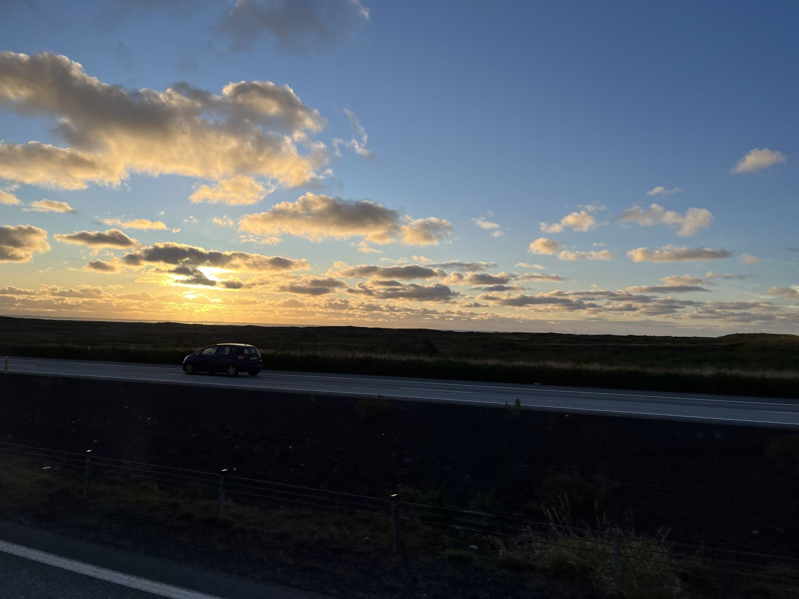
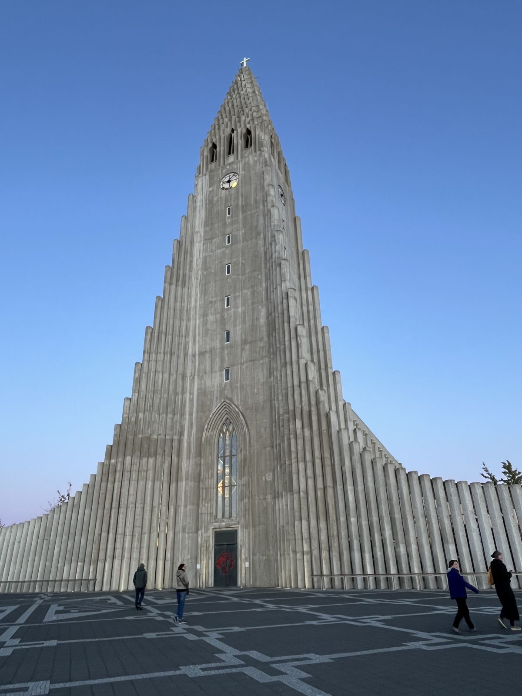
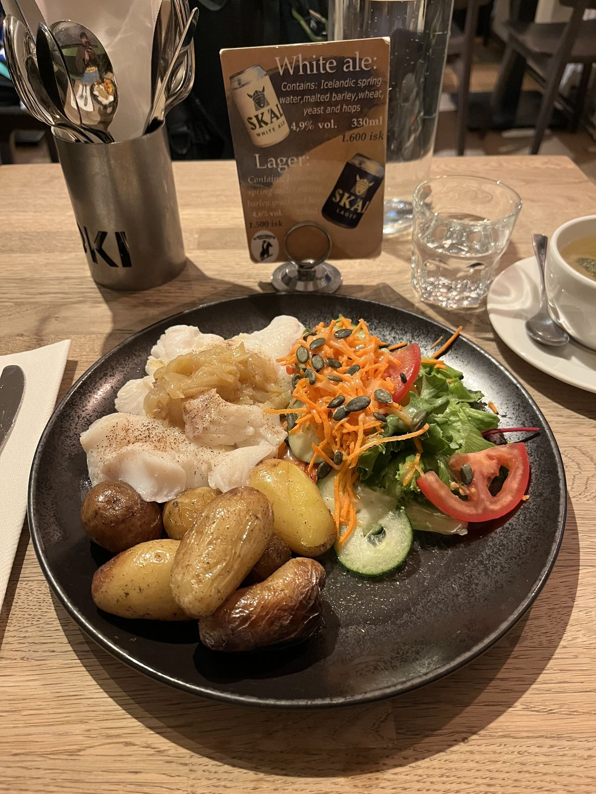
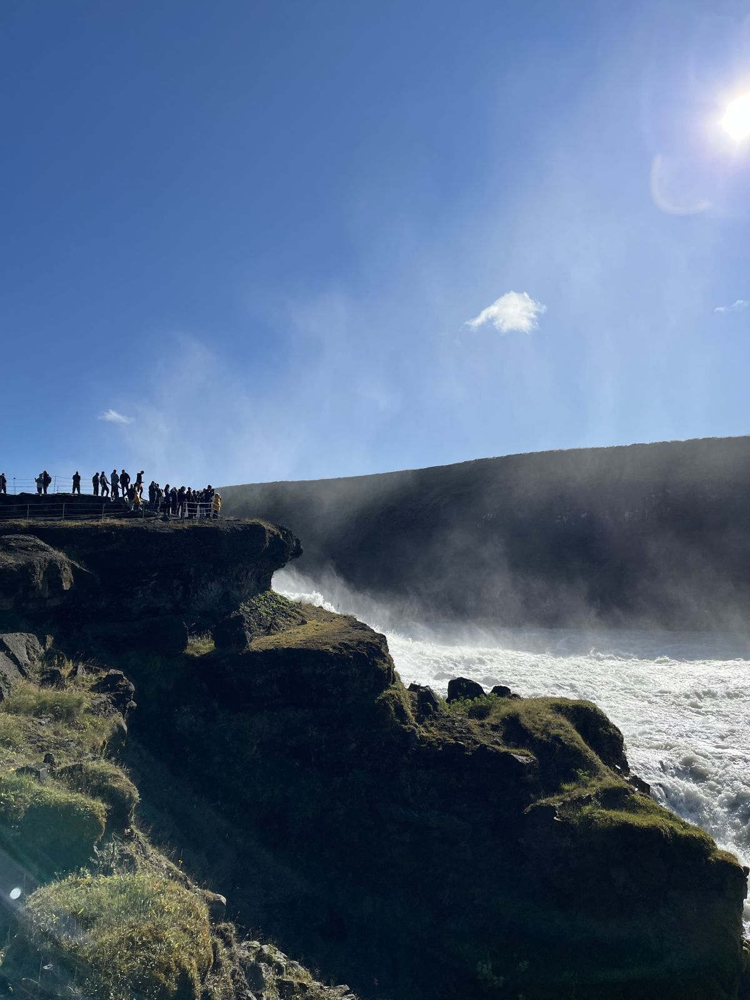
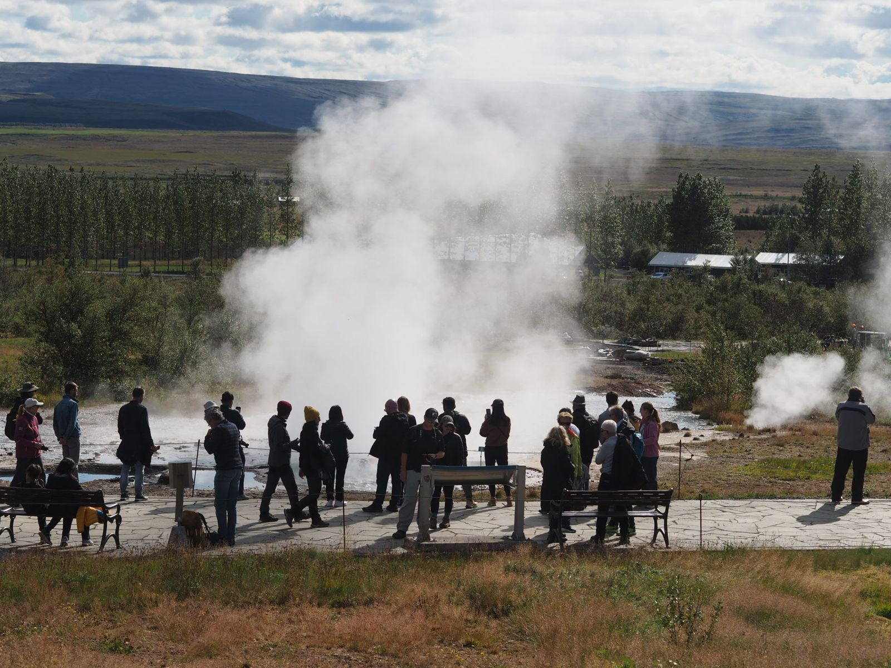
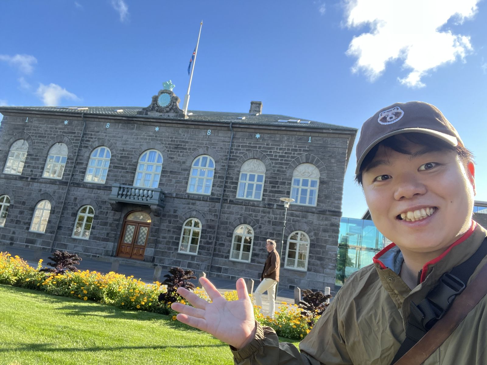
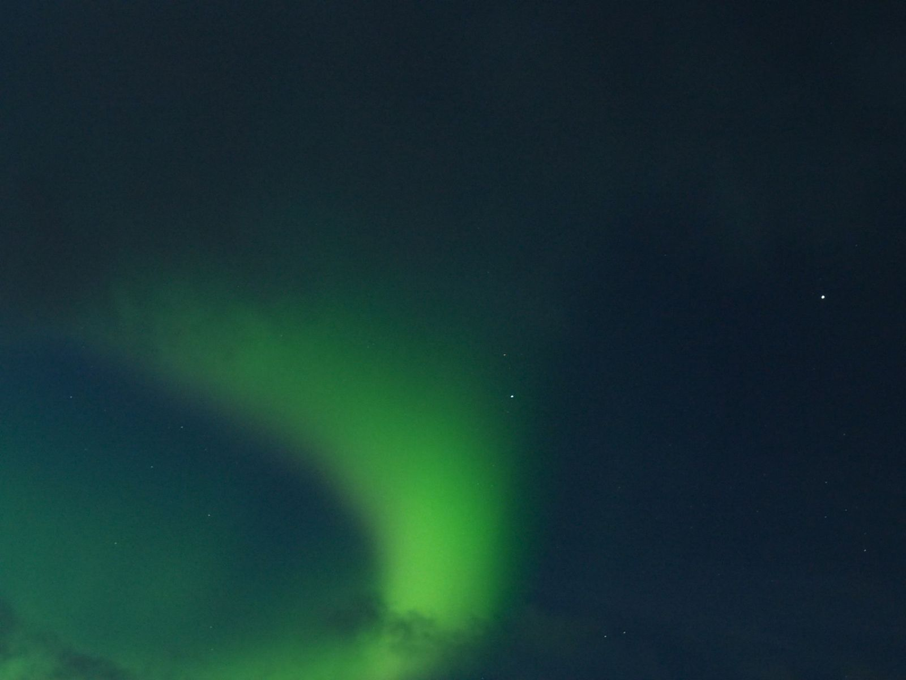
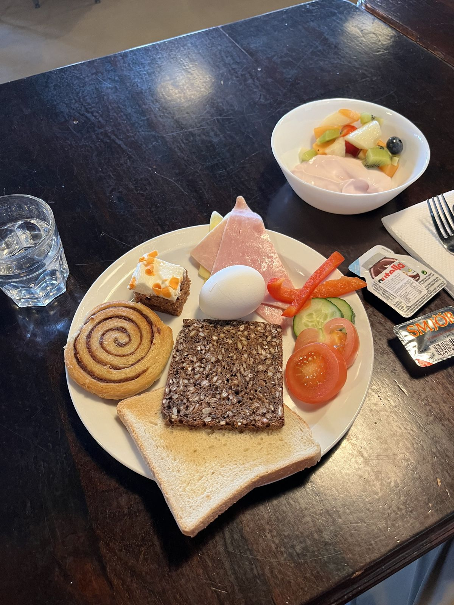
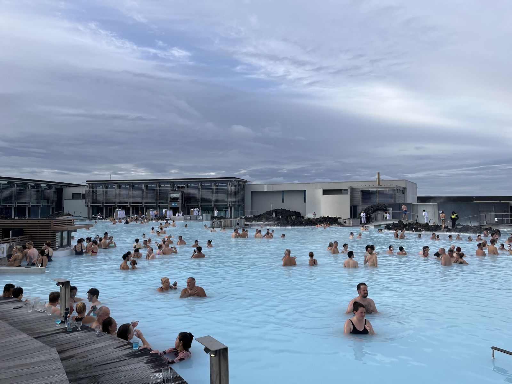
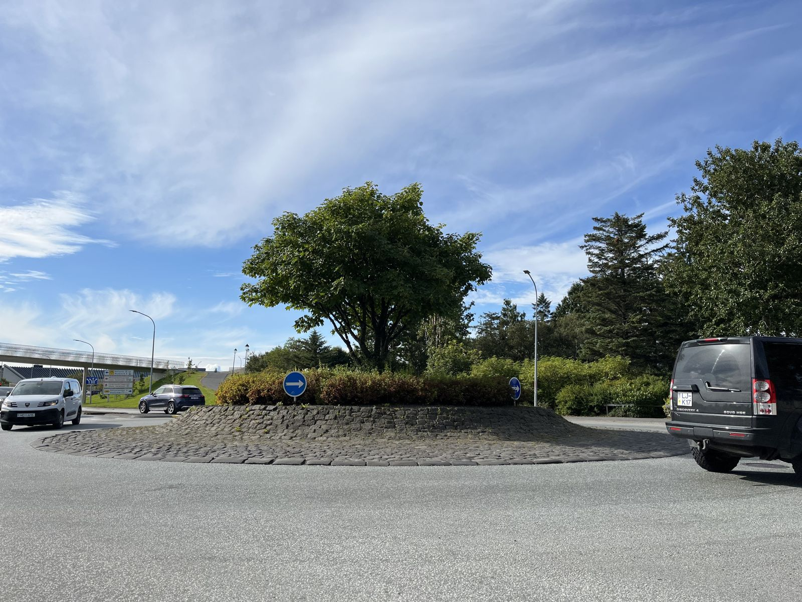

8月27日から約3日間、自費でアイスランドへ行ってきました。
現在、多摩市内全域で、その視察報告となる「暮らしやすい多摩をつくる会」のニュース第5号をポスティングしております。
市長の阿部さんも、姉妹都市提携のためにアイスランドのレイキャビク市を訪れている最中です。
こちらのブログでは、ニュースには書かなかった、アイスランドの観光情報やレストランの値段など、細かい部分を書いていきたいと思います。
※実際にアイスランドへ行く人が参考にできるように、旅行記のようなスタイルとなりますが、ご了承ください。
1日目：ケフラビク空港からレイキャビクへ
まず、空港に着いて最初に驚いたのが、査証のお兄さんに「ナンニチカン？」と日本語で話しかけられたことです。仕事柄とはいえ、日本からの旅行者は多くないでしょうし、なぜ日本語を習得したのか不思議です。でも、それだけでちょっと嬉しかったです。
空港から出て感じたのは、「山の匂いだ」ということです。高山の雰囲気というか、標高2,500mを超える山小屋で感じる肌寒い空気感に似ていました。標高は高くないものの、寒くて植物が少ない印象。さすが火山の国です。
ケフラビク国際空港は、レイキャビク市までバスで45分程度の位置にあります。レイキャビクにも小さな空港がありますが、そちらは国内線専用とのことです。
空港で市内までの往復バスのチケットを買いました。7,299ISK・約1万円です。なかなか高いですが、こればかりは仕方ありません。
バスでの移動中は、海と荒野ばかりが見えました。

バスの車窓から。海と荒野ばかりが続きます。市内のBSIバスターミナルから、泊まるホテル（というか、物価が高すぎるので今回はホステルに宿泊）までは徒歩20分です。鉄道はありません。
バスターミナルから歩いている途中で、レイキャビクのシンボル「ハットルグリムス教会」を見つけました。
灰色一色で、凝った彫刻などはありませんが、シンプルなデザインでステンドグラスも可愛らしいです。高さが74.5mもあるらしく、夜はライトアップもしています。
到着日は夜だったため中には入れませんでしたが、後日見に行ったところ、内部もシンプルでした。

レイキャビクのシンボル「ハットルグリムス教会」。教会の近くで、cafe Lokiというアイスランド料理のお店を見つけました。
GUFUSODIN BORSKURというアイスランドの伝統料理を注文しました。タラがメインのワンプレートとハーブティーで6,000ISK（約8,200円）でした。高い…！
でも、味はとても良かったです。蒸したタラの身がふわっふわで、ジャガイモもオーブンで焼かれていて絶妙な柔らかさでした。野菜も多くて、身体にも良さそうなプレートでした。

cafe Lokiのタラのプレート。ハーブティーと合わせて約8,200円。食べ終わったら、もう22時を過ぎていたので、「ブタの貯金箱」がアイコンのスーパーBOUNSへ行きました。
スキール（ヨーグルト）と飲み物、サンドイッチを購入しました。翌日食べましたが、どちらも美味しかったです！（日本人の口に合うものが多いです）
2日目：ゴールデンサークルと市内散策
2日目は、ゴールデンサークル・ゲイシール間欠泉・グトルフォスの滝・シンクヴェトリル国立公園など、アイスランドの自然を感じられるツアーに参加しました。
中でも、グトルフォスの滝には感動しました。とんでもない大きさと水量、迫力、、、かなり離れていても水しぶきが飛んできます。日本にはまずないようなスケールでした。
過去には、滝つぼに水力発電所を作る計画があり、一人の女性による反対運動がそれを食い止めたのだとか（！）

グトルフォスの滝。離れていても水しぶきが飛んできます。間欠泉は、噴出するまでの時間がランダムで（大体10分前後）、辛抱強く待ちながら、すかさず動画のシャッターを切るのが大変でした。日本にも間欠泉はありますが、ここまで高く噴出するものは現在無いらしいです。

噴き上がる間欠泉。ツアー後、16時頃に市内へ戻ってこられたので、レイキャビク市役所、国会議事堂、インギビュルグ・H・ビャルトナソンの像、レインボーロード、首相官邸などを一通り見学しました。どれもコンパクトで可愛らしい造りとデザイン。さすが人口35万人の国ですね。人数だけで見たら、中野区と同じくらいです。

アイスランドの国会議事堂。コンパクトで可愛らしい造りです。2日目の夜：オーロラツアー
夜は、再びバスターミナルに22時集合で、郊外の街灯が届かない場所でオーロラを見るツアーに参加しました。
オーロラが見られるかどうかは本当に運次第で、どんなに待ってもダメなことがよくあるそうですが、なんと、行きのバスの中からすでに見えていました！！
バスを降りてからも10〜15分ほど、緑色のオーロラが浮かんでは消え、かなり幻想的な景色を見ることができました。
しかし、その後は1時間半ほど粘っても、再び現れることはありませんでした。それでも運が良かったと思います。嬉しい！
「首都」でオーロラが見られるのは、世界でレイキャビクだけとのことです。

緑色のオーロラが浮かんでは消えていきました。3日目：パン屋とブルーラグーン
アイスランド3日目の朝は、外食をするとかなりお金がかかるので、ホステルの有料朝食を食べてみることにしましたが、これがなかなか美味しかったです！シナモンロールやライ麦パン、手作りのワッフルを作れる機械もありました。チューブに入ったタラの卵のペーストは、少し塩気が強かったですが、クラッカーとの相性が良かったです。

ホステルの朝食。外を散歩していると、ICELAND's OLDEST BAKERYなるお店がありました。パン職人として、行かないわけにはいきません。
ハード系からプレッツェルなどのドイツパン、クロワッサン、ケーキなどが陳列されていました。
お腹は空いていませんでしたが、デニッシュや小さなアーモンドケーキなど、3つのパンを買ってみました。美味しいけれど、ややボリューミーという感じでした。
午後は、以前から予約していた世界最大の温泉「ブルーラグーン」へ行きました。
入場料が2万円もするとんでもない高級温泉ですが、青白いお湯が珍しく、世界中から観光客が訪れます。現地の人は高いから行かないらしいです（笑）
水着を着て入るスタイルで、シリカの泥パックを提供するコーナーや、お酒を提供するBarが浮島のように点在しています。
サウナもあり、打たせ湯もあり、お金を払えばレストランやマッサージも楽しめるので、何時間でもいられるような空間でした。
青白い温泉なら、福島の玉子湯など、日本にもいくつかあります。しかし、ブルーラグーンは湧出量がすさまじいようで、温泉として立ち入れる範囲の外にも広大な湯畑が広がっていました。

世界最大の温泉「ブルーラグーン」。市内へ戻ってきてから、有名店のホットドッグを食べました。コーラとセットで1,370ISK（約1,800円）です。
バンズを蒸しているようで、とても柔らかく、食べやすかったです。フライドオニオンがよく効いています。
ソーセージのラム感はそこまで感じませんが、日本で食べるソーセージとはやや風味が異なり、ジューシーでした。
4日目：帰国
4日目の早朝の飛行機で、アイスランドを飛び立ちました。
アイスランドは、日本からの直行便が無くて行きにくいこともあり、一生で一度行けたらラッキーくらいの国だと感じました。
日本からの年間旅行者数は12,000人程度だそうです。最多のアメリカが約600,000人なので、比較するとかなり少ないですね。
その他、アイスランドで感じたこと
- ものすごくスマホの電波が通じます。国立公園の真ん中でも通じます。日本よりすごい！
- 地方へ行くと、池塘（ちとう）という、湿地にぽっかり空いたような池がありました。珍しい！馬や羊の牧場も結構ありました。
- パン屋さんで見かけた普通のコーヒーロールが850ISK（約1,100円）でした。日本で菓子パン1個が千円を超えることはないので、やはり物価がとても高いですね。
- 街に自販機がありません。マクドナルドもありませんでした。（飲食のチェーン店はほとんど見かけませんでした）
多摩市と似ている点
- レイキャビクは、多摩市と同じく、街全体がなだらかな坂になっています。坂の斜度は、（私の感覚ですが）乞田川から馬引沢一丁目の坂を登るくらいの角度で、坂のある街で育った私にとってはとても親近感がありました。
- 桜ケ丘にある「信号のいらない環状交差点」がレイキャビクにもいくつかありました。災害に強いので、日本にも増えたら良いのですが、広い土地が必要なんですよねぇ。
- あまり古い建物が無い点や、広い歩道橋や緑豊かな公園のある点が、多摩市とよく似ていると感じました。坂のある街は余白が生まれ（建物を建てられないような傾斜地など）、緑豊かになる傾向が強いように感じます。

レイキャビクの環状交差点。多摩市・桜ケ丘にもあります。おわりに
私は、バックパッカースタイルで過去に25ヶ国35都市を旅したことがありますが、その中でもアイスランドはかなり強く印象に残りました。
寒いけれど温かいような空気感、自然の恵みを上手く使った生活の仕方、可愛らしい街並みでのびのびと暮らす人たち。
北欧の「ヒュッゲ」というリラックスする時間が、穏やかな国民性を育んでいるのかもしれません。
機会があれば、またいつか行きたいです。素晴らしい国でした！！
こんなに素敵なレイキャビク市と姉妹都市になれる多摩市は幸せ者だと思います。
それでは、長くなりましたが、このへんで！
📰 視察報告をまとめた「暮らしやすい多摩をつくる会」ニュース第5号は、チラシのページからご覧いただけます。